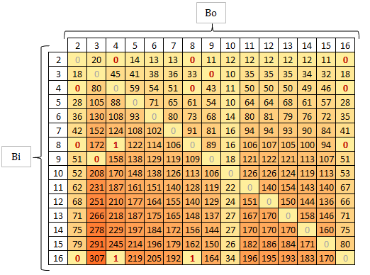

Let B > 1 be a positive integer (the base). Then every positive integer
X can be represented in one and only one way by the sequence
N-digits <DN-1, DN-2, ..., D1, D0>, where digits
DJ lie in the range
0 <= DJ <= B - 1, for all J (see [1], p. 12.)
Number X has the decimal value:
Y = DN-1 * BN-1 + DN-2 * BN-2 + ... D1 * B1 + D0 * B0
A simple algorithm which avoids recomputation of the powers of
B is known as
Horner's rule (see [2], p. 33.). A degree N polynomial can be evaluated
using only N-1 multiplications and N additions.
Because X is written as a string in the REXX language, we can use REXX built-in function
SUBSTR for finding J-th digit:
B_N2D: procedure parse arg X, B N = LENGTH(X) Y = 0 do J = 1 to N Y = Y * B + SUBSTR(X, J, 1) end return Y
2 through 9
(Binary to Nonary, therefore B_N2D name for this function).
For base B > 9
we must use the following function ANYBASE2D(X, B). The parameter X >= 0 is natural integer in base
B; the parameter B is base, where 2 <= B <= 16.
ANYBASE2D: procedure parse arg X, B Digit = "0123456789ABCDEF" do I = 1 to LENGTH(Digit) Figure = SUBSTR(Digit, I, 1) Dig.Figure = I - 1 end N = LENGTH(X) Y = 0 do J = 1 to N K = SUBSTR(X, J, 1) Y = Y * B + Dig.K end return Y
According [3], p. 22 the size of integer X in base B
is the same as its size in base 10,
times a constant factor
CEILING(LN(B)/LN(10)). Values of this facror are:
Base Factor
2, ..., 10 1
11, ..., 16 2
Given a number,
X, which we want to convert to a base B, here is the algorithm for performing the
conversion (see [4], p. 53):
1. The rightmost digit of X is X // B.
2. Replace X with X % B.
3. Repeat steps 1 and 2 until X = 0 and there are no significant digits remaining.
Following function in REXX doesn't use a stack and recursion for base 2, ..., 9:
D2B_N: procedure parse arg X, B if X = 0 then return 0 Y = "" do while X > 0 Y = X // B || Y X = X % B end return Y
D2ANYBASE(X, B) for
B = 2, ..., 16 follows. The parameter
X >= 0 is natural
decimal integer; the parameter
B is base of output, where
2 <= B <= 16.
The functions returns Y, where
YB = X10.
D2ANYBASE: procedure parse arg X, B if X = 0 then return 0 Digit = "0123456789ABCDEF" Y = "" do while X > 0 Rem = X // B Y = SUBSTR(Digit, Rem + 1, 1) || Y X = X % B end return Y
According [3], p. 22:
Base Factor
2 4
3 3
4, ..., 9 2
10, ..., 16 1
Testing system: Processor Intel Pentium Gold G5400, 16 GB RAM, Windows 10, REXX-Regina_3.9.3(MT) 5.00 5 Oct 2019.
Program:
BD = 10 B = 16 N = 50000; say "*** Test for B =" B "and N = " N X = "" do I = 1 to N; R = RANDOM(0, BD - 1); R = R + 1; X = X || SUBSTR("0123456789ABCDEF", R, 1); end Nd = MAX(9, CEILING(LN(10) / LN(B)) * N) numeric digits Nd call TIME "R" D2A = D2ANYBASE(X, B) say "D2ANYBASE:" TIME("R") "sec" ... Nd = CEILING(LN(B) / LN(10)) * N numeric digits Nd call TIME "R" A2D = ANYBASE2D(D2A, B) say "ANYBASE2D:" TIME("R") "sec" ...
X with N = 50000 digits.
Time is round to the nearest whole second.
FROM ANY BASE TO DECIMAL
Base B_N2D ANYBASE2D X2D(X) X2D(B2X(X))
2 34 24 34
3 19 19
4 15 15
5 10 10
6 14 14
7 15 15
8 14 14
9 15 15
10 11 11
11 17
12 18
13 19
14 19
15 17
16 20 34
ANYBASE2D is better than built-in functions.
We need not the special function B_N2D, because for converting from any base to
decimal we can use the ANYBASE2D function for B = 2, 3, ..., 16.
FROM DECIMAL TO ANY BASE
Base D2B_N D2ANYBASE D2X(X) X2B(D2X(X))
2 286 286 36
3 191 193
4 153 152
5 128 128
6 119 119
7 110 110
8 98 98
9 90 90
10 105 105
11 108
12 108
13 108
14 103
15 96
16 100 36
For B = 2 and B = 16 is better use the built-in function.
We need not the special function D2B_N, because for converting from decimal base to
any base we can use the D2ANYBASE(X, B) function for
B = 3, ..., 15.
The following function ANYBASE2ANYBASE(X, Bi, Bo) takes a
string X, representing an positive number in the base
Bi and converts it into the base
Bo, returning the new string
Y, YBo = XBi
for 2 <= Bi, Bo <= 16 a Bi <> Bo.
ANYBASE2ANYBASE: procedure parse arg X, Bi, Bo return D2ANYBASE(ANYBASE2D(X, Bi), Bo)
ANYBASE2ANYBASE(X, Bi, Bo)
using the methods describing in [5], chapter 4.1.3:
Converting from base 2 to base 2k:
Group the bits in the base 2 expansion into
blocks of k bits, starting from the right, and then convert each block of k bits into a
base 2k digit.
3 bits starting from the
right and converting each block into an octal digit. Similarly, converting from binary to
hexadecimal is done by grouping the bits of the binary expansion into blocks
of 4 bits starting from the right and converting each block into a hex digit.
Converting from base 2k to binary (base 2): convert each base
2k digit into a block
of k bits and string together these bits in the order the original digits appear.
Similalry for converting from 3 to base 32 and vice-versa.
The function
DIRECTCONVERT(X, Bi, Bo) takes a string X, representing an positive number in the base
Bi and converts it into the base Bo, returning the new string Y,
YBo = XBi,
for pairs values
[Bi, Bo]: [2, 4], [4, 2], [2, 8], [8, 2], [3, 9], [9, 3], [2, 16], [16, 2]LookT. is look-up table.
Bi = 2, Bo = 16 the function
DIRECTCONVERT
creates the array:
LookT.2.16 = 4 LookT.2.16.0000 = 0; LookT.2.16.0001 = 1; LookT.2.16.0010 = 2; LookT.2.16.0011 = 3 LookT.2.16.0100 = 4; LookT.2.16.0101 = 5; LookT.2.16.0110 = 6; LookT.2.16.0111 = 7 LookT.2.16.1000 = 8; LookT.2.16.1001 = 9; LookT.2.16.1010 = "A"; LookT.2.16.1011 = "B" LookT.2.16.1100 = "C"; LookT.2.16.1101 = "D"; LookT.2.16.1110 = "E"; LookT.2.16.1111 = "F"
10010011 to a hexadecimal number is done by
replacing each 4-bit binary number (4 is the value of the variable
LookT.2.16) its hexadecimal equivalent. LookT.2.16.1001 || LookT.2.16.0011 = 93.
DIRECTCONVERT: procedure parse arg X, Bi, Bo /* Create Lookup Table */ do K = 2 to 4 /* number of bits for base = 2 ** K */ Base2K = 2 ** K LookT.2.Base2K = K LookT.Base2K.2 = 1 do I = 0 to Base2K - 1 Xi = D2ANYBASE(I, Base2K) Bin= RIGHT(D2ANYBASE(I, 2), K, "0") LookT.2.Base2K.Bin = Xi LookT.Base2K.2.Xi = Bin end end do K = 2 to 2 /* number of bits for base = 3 ** K */ Base3K = 3 ** K LookT.3.Base3K = K LookT.Base3K.3 = 1 do I = 0 to Base3K - 1 Num = RIGHT(D2ANYBASE(I, 3), K, "0") LookT.3.Base3K.Num = I LookT.Base3K.3.I = Num end end /* end of Lookup Table creating */ N = LENGTH(X) Group = LookT.Bi.Bo Length_Group = N // Group if Length_Group > 0 then do N = N + Group - Length_Group X = RIGHT(X, N, "0") end Y = "" do Index = N - Group + 1 to 1 by -Group Figure = SUBSTR(X, Index, Group) Y = LookT.Bi.Bo.Figure || Y end return Y
[Bi, Bo]: [4, 8], [8, 4], [4,16], [16, 4], [8, 16], [16, 8]
we call the function DIRECTCONVERT:
DIRECTCONVERT(DIRECTCONVERT(X, Bi, 2), 2, Bo)
ANYBASE2ANYBASE(X, Bi, Bo) can be sometimes speeded up for the special values
Bi and Bo (found experimentally). The improvement function follows:
ANYBASE2ANYBASE: procedure parse arg X, Bi, Bo TestQOX. = 0 TestQOX.4 = 1; TestQOX.8 = 1; TestQOX.16 = 1 Test2K. = 0 Test2K.2 = 1; Test2K.4 = 1; Test2K.8 = 1; Test2K.16 = 1 Test3K. = 0 Test3K.3 = 1; Test3K.9 = 1 select when Bi = Bo then return X when (TestQOX.Bi & TestQOX.Bo) /* Bi, Bo from {4, 8, 16}, i.e. Quaternary, Octal, heXadecimal */ then return DIRECTCONVERT(DIRECTCONVERT(X, Bi, 2), 2, Bo) when (Test2K.Bi & Test2K.Bo) | (Test3K.Bi & Test3K.Bo) /* Bi, Bo either from {2, 2 ** K}, or from {3, 3 ** K} */ then return DIRECTCONVERT(X, Bi, Bo) when Bi = 2 then return D2ANYBASE(X2D(B2X(X)), Bo) when Bo = 2 then return X2B(D2X(ANYBASE2D(X, Bi))) when Bo = 16 then return D2X(ANYBASE2D(X, Bi)) when Bo = 10 then return ANYBASE2D(X, Bi) otherwise return D2ANYBASE(ANYBASE2D(X, Bi), Bo) end
ANYBASE2ANYBASE(X, Bi, Bo) function in the
program:
/* TEST */ Output_file = 'test01.txt' N = 50000 numeric digits 4 * N do Bi = 2 to 16 do Bo = 2 to 16 X = "" do I = 1 to N R = RANDOM(0, Bi - 1) R = R + 1 X = X || SUBSTR("0123456789ABCDEF", R, 1) end call TIME "R" Y = ANYBASE2ANYBASE(X, Bi, Bo) Line = Bi Bo TRUNC(TIME("R")) "sec"; say Line call lineout Output_file, line if STRIP(X, "L", 0) <> STRIP(D2ANYBASE(ANYBASE2D(Y, Bo), Bi), "L", 0) then do say Bi Bo "error" X D2ANYBASE(ANYBASE2D(Y, Bo), Bi) exit end end end exit
ANYBASE2ANYBASE(X, Bi, Bo)
for pseudorandom natural numbers X with N = 50000
digits and Bi, Bo = 2, ..., 16.
In the cell with coordinates Bi, Bo is actual
execution time. It is round to the nearest whole second.
Cells written in red are result of the DIRECTCONVERT function.

Table 1 Execution time of ANYBASE2ANYBASE(X, Bi, Bo)
function CEILING
function LN
Technique: bit array encoded as decimal number
[1] Wilf Herbert S. (1994) Algorithms and Complexity. Internet Edition, Summer, 1994. Available at
https://www2.math.upenn.edu/~wilf/AlgoComp.pdf
[2] Wirth Niclaus (1985) Algorithms and Data Structures. Oberon version: August 2004. Available at
https://people.inf.ethz.ch/wirth/AD.pdf
[3] Dasgupta S., Papadimitriou C. H., Vazirani U. V. (2006) Algorithms. Available at
http://algorithmics.lsi.upc.edu/docs/Dasgupta-Papadimitriou-Vazirani.pdf
[4] McMillan Michael (2014) Data Structures and Algorithms
with JavaScript. First Version. O'Reilly Media inc., Sebastopol.
[5] Rosen Kenneth H.[et al.] (2000) Handbook of discrete and combinatorial mathematics. CRC Press.
Boca Raton London New York Washington, D.C. ISBN 0-8493-0149-1
last modified 15th August 2021 Copyright © 1998-2021 Vladimír Zábrodský, Blansko, Czech Republic
zabrodsky(DOT)v(AT)seznam(DOT)cz